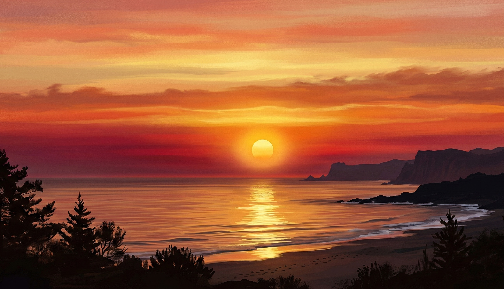

JPEG

sunset.jpg
About This Image
This is a simple sunset image I made using Nano. It has warm orange and red colors that blend into each other, with a round sun in the middle. I made it myself for this assignment.
Why I Chose This Image
I chose a sunset because JPG is best for photos with lots of colors and smooth blends. The warm colors in this image show exactly how JPG handles that kind of gradual color change without taking up a lot of space.
JPG does lose a tiny bit of quality when it compresses, but for something like a sunset sky, you honestly cannot tell the difference. That is why almost every photo on the internet is saved as a JPG.
Source
I created this image using Nano Banana. It is original work made for this assignment. No outside source needed.